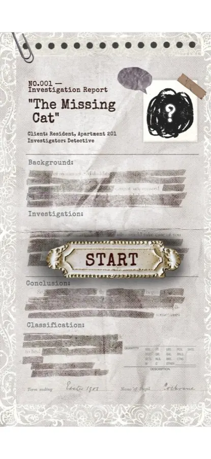
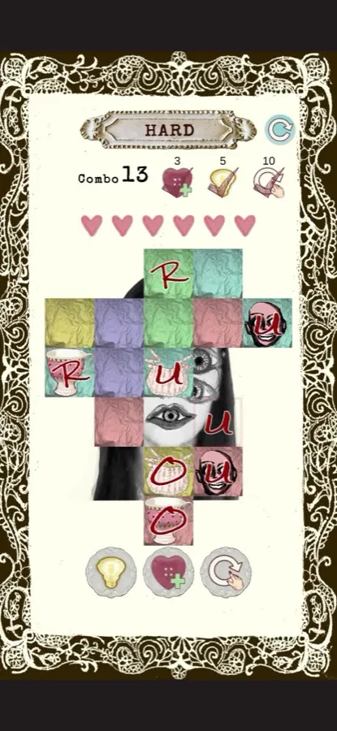
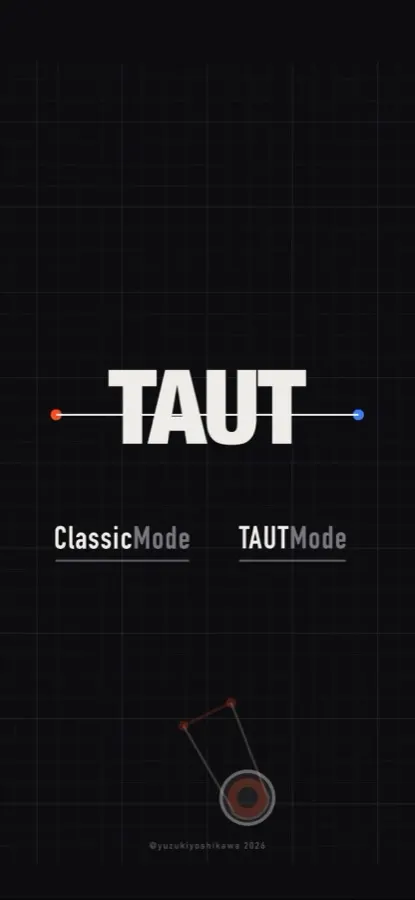
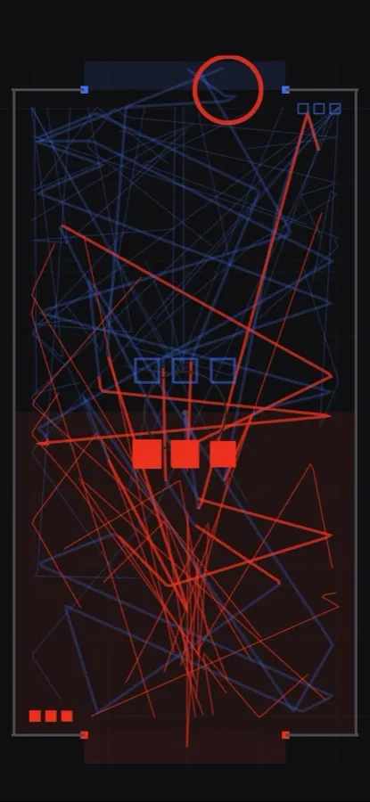
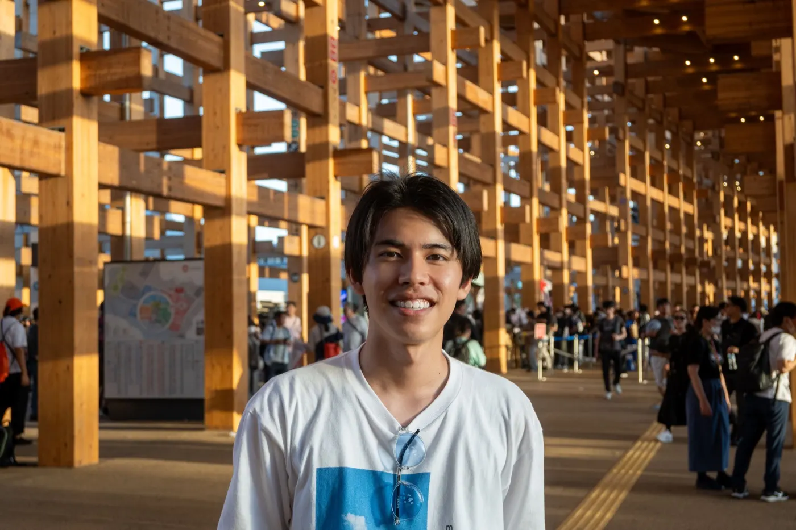

01mystery tiles
優秀賞 東京藝術大学 × DeNA SUMMER GAME CAMP
指先でタイルを剥がしながら、事件の謎に迫っていくパズルゲーム。
- ねらい
- 50 代の主婦の趣味を分析し、「指先がその世界にいる実感」を謎解きにした。
- 種類
- スマートフォンゲーム／3 人チーム
- 制作期間
- 2026 年 8 月
- 担当
- ディレクション、進行管理



02TAUT
1 台の iPhone を二人で囲み、ゴムを引いてパックを飛ばし合う対戦ゲーム。
- ねらい
- 1 台のスマホを、二人で同時に触って遊びたくて、趣味で作った。
- 種類
- スマートフォンゲーム（iPhone）／個人制作
- 制作期間
- 2026 年 10 月



次へ
自己紹介
「気持ちいい」のなぜを、新しい遊びに。